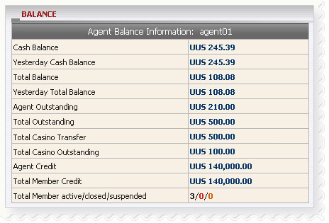

Balance
Definition:
This is overall report that helps agent well-informed with his/her current balance, win/loss amount, paid or received amount.

Balance
Term definition:
- Cash Balance: Current total agent win/lost amount including transfer transactions.
- Yesterday Cash Balance: total agent win/lost amount till yesterday.
- Total Balance: total paid or received amount that Agent needs to settle with upline.
- Yesterday Total Balance: total paid or received amount that Agent needs to settle with upline till yesterday.
- Agent Outstanding: total agent’s share from member stakes based on his/her position taking on running/waiting tickets.
- Total Outstanding: total member stake on running/waiting tickets.
-
Total Casino Transfer: total amount which was transferred from Sportsbook to Casino by member.
- Total Casino Outstanding: total member stake on unfinished Casino games.
- Agent Credit: amount of credit given to agent by upline.
- Total Member Credit: total amount of credit given to members.
- Total Member active/closed/suspended: the number of members which are active/ closed or suspended.
How to understand the report:
- Cash Balance = 245.39 means currently agent won 245.39
- Yesterday Cash Balance = 245.39 means till yesterday agent won 245.39
- Total Balance = 108.08 means agent will receive 108.08 from upline.
- Yesterday Total Balance = 108.08 means till yesterday agent agent will receive 108.08 from upline.
- Agent Outstanding = 210 means agent might receive a maximum of 210 from all running/waiting tickets.
- Total Outstanding = 500 means currently total member stake on running/waiting tickets is 500.
- Total Casino Transfer = 500 means members transferred from Sportsbook to Casino a total amount of 500.
- Total Casino Outstanding = 100 means members left 100 on unfinished games.
- Agent Credit = 140,000 means agent was initially given 140,000 by upline.
- Total Member Credit = 140,000 means the total credit agent gave to all of his members.
- Total Member active/closed/suspended = 3/0/0 means this agent has 3 active/0 closed/0 suspended members.